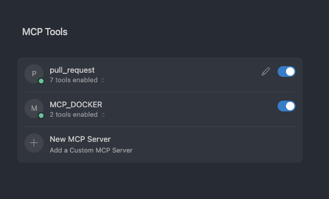

Short update since First Look at MCP. Docker has released it's MCP toolkit which includes a catalog of MCP servers as well as helpers to connect to the MCP clients.
It is exceeding easy to use it, docker is registered as a single MCP server for your client. And tools from the MCP catalog can be added to it by click from the Docker UI. If credentials are needed you'll be prompted to fill it in.

Under the hood
Docker boasts some security features which claims to scan for malicious images and filter out sensitive information sent by the mcp client. It remains to be seen how these claims hold up.
All the MCP servers are running inside of a container, which means the 3rd party MCP servers can't access your filesystem.
Not quite it
Whilst this is a step in the right direction, it's still not hitting the mark for me. There's a reason why we don't run all our desktop applications in docker. Docker is still a bit too expensive to run in the background and a little hard to use in the first place.
Further to that docker MCP is still just a local MCP server. I firmly believe that remote MCP servers are where its potential lies. And though security and sandboxing is important it's a little odd that a local MCP server has no access to the local filesystem.